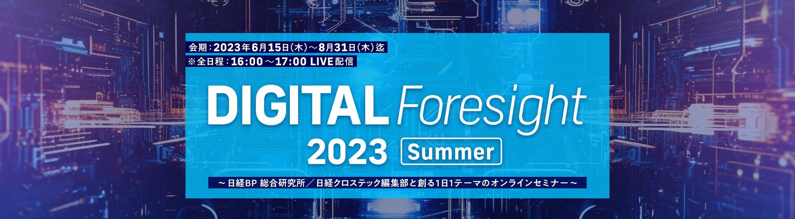
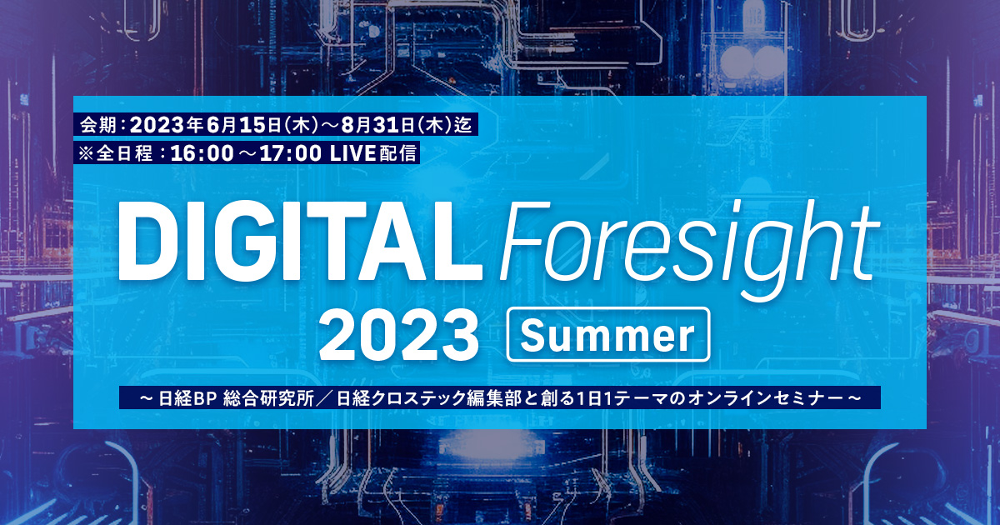

 
お申し込み受付を
終了しました
「DIGITAL Foresight」は企業のビジネス変革の推進を後押しするために、生まれたオンラインセミナー（LIVE）で、この夏の開催で7回目を迎えます。
忙しいビジネスパーソンが最新の技術トレンドを効率的に把握できるように、1日1テーマ、1時間で解説するというコンセプトの元で、この夏も6月15日（木）～8月31日（木）の会期中、火曜日と木曜日の夕方16:00～17:00の時間帯に番組を無料配信いたします。
第1部（前半30分）は日経クロステック編集部員による注目テーマに関するトレンド解説（対談または講演）、第2部（後半30分）は1部で取り上げた注目テーマに関する最新のソリューション紹介と事例紹介を協賛社様と日経BP 総合研究所の研究員による対談形式で解説します。
アンケート回答者の中から抽選で100名様に
「Amazonギフト券（1,000円分）」進呈！
＊複数セミナーご回答で当選確率はさらにUP
本セミナーはオンラインセミナー（Live配信）です。
開催概要
- 名称
-
DIGITAL Foresight 2023 Summer
～日経BP 総合研究所／日経クロステック編集部と創る1日1テーマのオンラインセミナー～
- 日程
-
【6月開催分】※3日間
2023年6月15日（木）、6月20日（火）、6月22日（木）【7月開催分】※4日間
2023年7月4日（火）、7月11日（火）、7月13日（木）、7月27日（木）【8月開催分】※4日間
2023年8月1日（火）、8月3日（木）、8月29日（火）、8月31日（木）※全日程：16:00～17:00 配信（予定）
- 開催形式
- オンラインセミナー（Live配信）
- 主催
- 日経BP 総合研究所 イノベーションICT ラボ
- 協賛
- Absolute Software、アドビ、アルテリックス・ジャパン、Arcserve Japan、GO、カオナビ、ナレッジワーク、エヌ・ティ・ティ・データ・イントラマート、パロアルトネットワークス、ソリトンシステムズ、TDSE（ABC順）
- 協力
- 日経クロステック、日経クロステックActive、日経コンピュータ、日経NETWORK
- 参加料
-
無料／事前登録制（先着順）
※受講数に限りがあり、件数に到達した場合は、その時点で締め切らせていただきます。
ご了承ください。
お問い合わせ
日経BP読者サービスセンターセミナー係
お問い合わせお申し込み受付を
終了しました